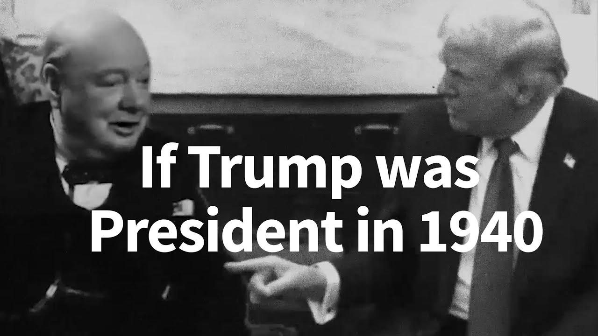

来B站一起耍【Global每日英语简报】
【如果特朗普在1940年当总统】
Summary: A heated exchange highlights tensions over wartime leadership, with accusations of disrespect and lack of gratitude amid global conflict.
摘要： 一段激烈的对话凸显了战时领导力的紧张局势，指责对方不尊重且在全球冲突中缺乏感激之情。

⏱️ Estimated Reading Time: 2 min
[Music] the spotlight of world history swings to the White House not in a good position.
[音乐] 世界历史的聚光灯转向白宫，形势不妙。
You don't have the cards right now with us.
你现在手里没有好牌。
You start having playing cards right now you don't very serious Mr President.
你现在开始有牌可打，但你不认真，总统先生。
Serons of people you're gambling with World War.
你在用世界大战赌博，先生们。
You're gambling you talking and what you're doing is very disrespectful to the country this country.
你在赌博，你在夸夸其谈，你的所作所为对这个国家非常不敬。
I'm far more than a lot of people said have you said thank you once a lot of times no you said Thank offer some words of appreciation for the United States of America and the president who's trying to save your country please.
我比很多人说的更重要，你说过谢谢吗？一次？很多次？没有。请对美国和美国总统说些感谢的话，他正试图拯救你的国家。
You think that if you will speak very loudly about the war you he's not speaking loudly he's not speaking loudly your country a lot of talking your country is in big trouble.
你以为大声谈论战争就能解决问题，他没有大声说话，他没有大声说话，你的国家空谈太多，你的国家陷入大麻烦。
I know you're not winning you're not winning this you have a damn good chance of coming out okay because of Mr we are staying in our country take strong from the very beginning of the war we've been alone.
我知道你们没赢，你们赢不了，你们有很好的机会脱身，多亏了先生，我们从战争一开始就坚守在自己的国家，孤立无援。
If you didn't have our military equipment this war would have been over in two weeks.
如果没有我们的军事装备，这场战争两周内就结束了。
It's going to be a very hard thing to do business like this tell you just say thank you.
这样合作非常困难，告诉你，说声谢谢就行。
I said a lot of times thank you to the American people you're wrong we know that you're wrong.
我对美国人民说过很多次谢谢，你错了，我们知道你错了。